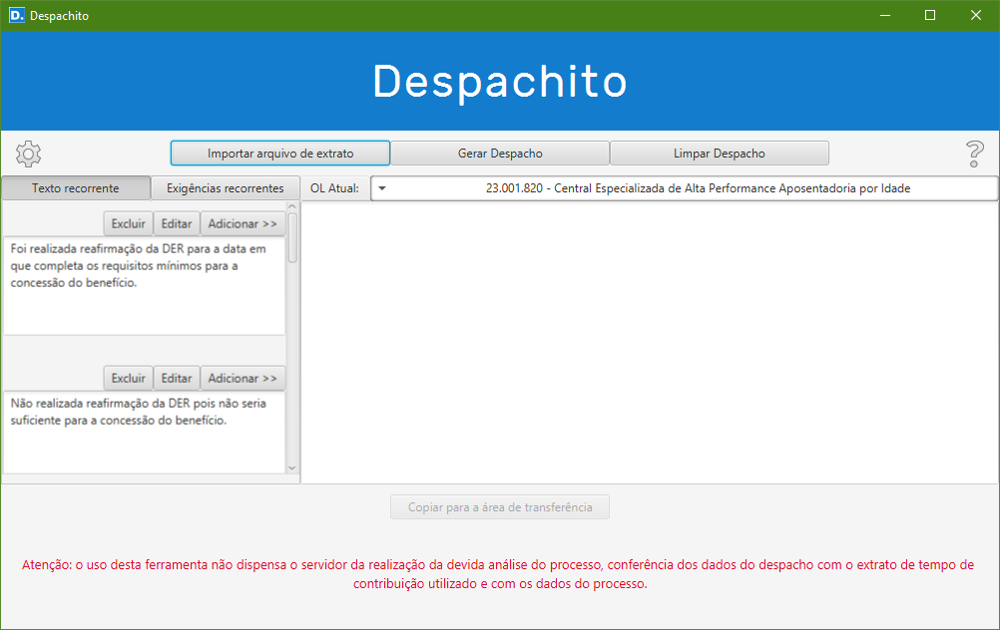
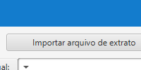
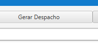
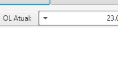
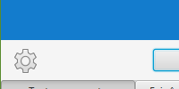
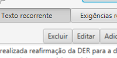
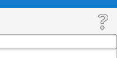

Informações

O programa gera automaticamente um despacho de conclusão de processo utilizando os dados do extrato de tempo de contribuição do programa PRISMA.
As espécies de benefício suportatas são aposentadoria por idade urbana e aposentadoria por tempo de contribuição.

No botão de importação de arquivo de extrato é possível buscar um arquivo txt salvo automaticamente pelo programa PrismaPDF ou manualmente pela opção de captura do programa PRISMA.
O botão gerar despacho cria o despacho com os dados do arquivo de extrato de tempo de contribuição. O despacho pode ser editado na caixa de texto central.


A caixa de seleção de OL atual permite informar o órgão local que será inserido no cabeçalho do despacho.
O botão de configuração permite o gerenciamento da lista de OL utilizados, bem como a indicação de uma pasta padrão onde o programa irá buscar os arquivos de extrato de tempo de contribuição.


As abas de Texto recorrente e Exigências recorrentes permitem a inserção de textos regularmente utilizados, com a possibilidade de edição e inclusão de textos personalizados pelo usuário.
O botão de informações exibe a versão do programa, bem como traz instruções detalhadas para utilização do mesmo.
